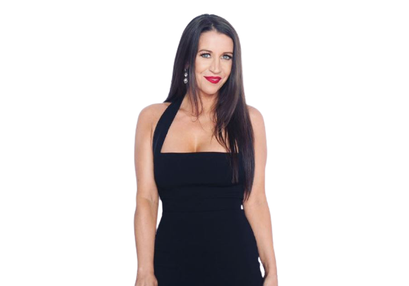
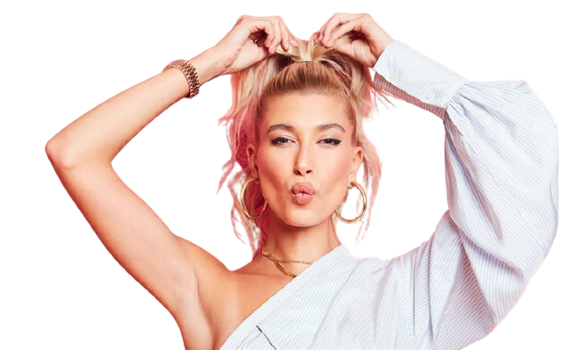

About
Founder
Patricia Lynn Mallette (born April 2, 1975) is a Canadian author, film producer, and mother of Justin Bieber. She also managed her son's early career. Her autobiography, Nowhere but Up, was published in 2012 by Christian book publisher Revell, and was #17 on the New York Times Best Seller list during its first week of release.
Brand ambassador's
Justin Bieber is a Canadian singer and songwriter. Born in 1994 in Stratford, Ontario, Canada, to a single mother, Bieber took second place in a local talent competition at a young age. After his mother posted YouTube clips of her boy performing, Bieber went from an unknown, untrained singer to a budding superstar with a big-time record deal with Usher within two years. Bieber went on to become the first solo artist to have four singles enter the Top 40 before the release of a debut album.
Model & Influencer
Hailey Rhode Bieber (née Baldwin; born November 22, 1996) is an American model, media personality, and socialite. Baldwin trained as a ballet dancer, but ended that career due to an injury. She has been featured in major ads for Guess, Ralph Lauren, and Tommy Hilfiger. Baldwin is a daughter of Stephen Baldwin and niece of Alec Baldwin. She is married to Canadian singer Justin Bieber, and lives in Waterloo, Ontario, Canada.